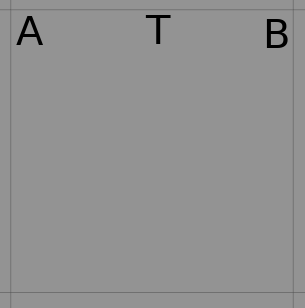

Homework 2 - Programming Section¶
Welcome to Programming section of Homework 2 for CSE 571 - Fall 2019.
This section will test your understanding of Planning as covered in the class.
Homework is due at 11:59 PM on October 17, 2019. Please plan your submission early to avoid last moment hiccups.
Plagiarism Warning¶
Powerful copy-detection systems will be used as part of grading, so please DO NOT submit/use any piece of code that is not your own work. These systems can easily catch instances where users change variable names, etc. from copied code.
If you use any helper code, do not forget to cite it using comments inside the code.
If you are stuck at any point, you can approach the professor or TA for help.
As mentioned in class, please remember the academic integrity policy of this course.

Tasks¶
[10 points] Complete the problem.pddl by writing the correct problem independent goal.
[25 points] Complete the domain.pddl by completing the pick, place, and move actions.
[25 points] Convert the pick, place, and move actions so that they can be run on the TurtleBot.
Please refer to instructions section to understand what these tasks mean and how to setup the environment. It also includes a number of tips that will significantly simplify your task. Follow the instructions strictly to ensure that your assignment can be graded by the auto-grader. Custom grading requests will not be entertained.
Grading Policy¶
- If the submission is late by 24 hours, you are entitled to 30% to the score you’ll get for the homework.
- No points will be given if the assignment is submitted later than 24 hours.
- In order to get full points for part 1, your goal should be independent of the number of objects in the environment. Submit the goal alongwith your pdf submission.
- In order to get full points for part 2, all the action descriptions should be correct. No partial points will be awarded if not all actions are right. We will test part 2 and part 3 with the goal generated by auto-grader script.
- In order to get full points for part 3, your final submitted code should run without any input or configuration from the TA. If any changes are required to get your submitted code to run, points will be deducted in a manner proportional to the number of changes needed. If you follow the instructions your code will run without any inputs from the TA.
- Homework will be graded on Ubuntu 16.04 machines setup with ROS Kinetic, and Python 2.7. Use the setup from HW0 to ensure your code runs as intended with this configuration.
Instructions¶
Setting up Planning Folder¶
We assume that you have completed the setup as instructed in Homework 0. Refer to Homework 0 Webpage for details.
Clone the “planning” folder from Github to ~/catkin_ws/src/
cd ~/catkin_ws/src && git clone https://github.com/AAIR-lab/planning.git
Change permission of all scripts in planning folder to make them executable.
chmod u+x ~/catkin_ws/src/planning/scripts/*.py
Execute the env_setup.sh script. It will copy the necessaty files in respective folders. This script will fail if you don’t have turtlebot folder in ~/catkin_ws/src. Refer Homework 0 setup if this is the case.
chmod u+x ~/catkin_ws/src/planning/env_setup.sh && ~/catkin_ws/src/planning/env_setup.sh
Environment Setting¶
Refer the image below to see how a sample maze environment looks like. The turtleBot has a basket on top of it. There are books of 2 different sizes (large and small) and 2 different subjects lying around on the maze. There are 4 destination bins, 2 of each subject. Each subject has bins of 2 sizes, large and small. Each book has a designated bin, depending on its size and subject.
{kind=link}
Some of the terms that we use throughout the assignment are:
- Book and Bin Size: There are two sizes for the books and bins. Large and Small.
- Number of Subjects: This is the number of distinct subjects. This number can vary between 1 and 10 inclusive. For each of the subject, two different bins will be generated; large and small.
- Number of Books: This is the number of books you have of each subject in each size. This number can vary between 1 and 5 inclusive. So actual number of books in the whole environment is number of books * number of subjects * 2.
- Load Location: Every book and bin has 2 load locations. For a book it is the set of locations from where it can be picked by the TurtleBot. For a bin it is the set of locations from where the TurtleBot can place the books into this bin.
Warning
We gave multiple load locations because it is possible that one of the book’s load location is obstructed by another book. Same can also happen for a bin. In such a case the TurtleBot can go to the another load location and perform the pick or place operation.
It is possible that both the load locations of a book or bin are obstructed. In such a case no solution exists, and you have to regenerate the new maze by restarting server.py. Use less number of books initially to avoid this situation.
Grid Size: Grid Size is not used explicitly in this homework. It is dependent on the number of books. For this homework, Grid Size = 6 * number of subjects.
Note
Similar to the previous homework, the actual grid size used for navigation is different from what is seen in Gazebo environment. Each of the square seen in Gazebo is divided into 4 equal squares.
Fig 1. Grid visible in Gazebo

Fig 2. Actual navigation grid
Hence, if you have to go from point A to B in Gazebo environment using ‘MoveF’ action, you will have to give ‘MoveF’ command twice. If you give the ‘MoveF’ command once, the TurtleBot will stop at T.
Moving TurtleBot¶
On a terminal, run roscore.
roscore
In a new terminal session, run the server file (located at ~/catkin_ws/src/planning/scripts/server.py). Use the arguments to provide the number of subjects, number of books of each subject, and random seed.
rosrun planning server.py
Use – help option to see how to pass arguments to the server.
$ rosrun planning server.py --help usage: server.py [-h] [-sub 5] [-b 5] [-s 32] optional arguments: -h, --help show this help message and exit -sub 5 for providing no. of subjects -b 5 for providing no. of books for each subject -s 32 for providing random seed
Running server.py will generate: #. A random environment with number of books and number of subjects mentioned in parameters of the server.py. #. A partial PDDL problem file ~/catkin_ws/src/planning/scripts/problem.pddl populated with initial state and objects.
Launch the maze in a new terminal.
roslaunch planning maze.launch
Run the move_tbot3.py file in a new terminal. It enables the movement of TurtleBot3.
rosrun planning move_tbot3.py
Complete the problem.pddl and domain.pddl to proceed further. This is explained in next few sections.
Complete refinement.py. This is explained in next few sections.
Run refinement.py to generate the plan.
rosrun planning refinement.py -step 1Run refinement.py to run the TurtleBot.
rosrun planning refinement.py -step 2Run refinement.py with -h parameter to see it’s usage.
$ rosrun planning refinement.py -h usage: refinement.py [-h] [-step 1] [-planner FF] [-params] optional arguments: -h, --help show this help message and exit -step 1 Step to execute: 1. Generate plan 2. Perform downward refinement and execute -planner FF which planner to use {FF, FD} -params parameters to the planner
Completing problem.pddl¶
Run server.py as mentioned in the previous section to generate the partially complete problem.pddl.
problem.pddl is located at ~/catkin_ws/src/planning/
Objects and Initial state are populated by server.py.
Write a general Goal statement using forall and exists quantifiers. It should not depend on the number of books, number of bins, etc.
Note
Hint: Goal should be that for all the books, there should be a bin with the same subject and size such that the location of book and respective bin is same.
Warning
Save this goal in another file, because everytime you run server.py, a new problem.pddl file will be generated where you have to manually copy this goal.
Submit this goal alongwith the pdf file that you’ll submit for Theory section of the homework. We will test the remaining sections of the programming section using our own goal.
Completing domain.pddl¶
The domain file provided to you (located at ~/catkin_ws/src/planning/) looks like this:
(define (domain bookWorld)
(:requirements :equality :typing :strips)
(:types robot book bin location subject size)
(:predicates
(Book_At ?a - book ?b - location)
(Bin_At ?a - bin ?b - location)
(Book_Subject ?a - book ?b - subject)
(Book_Size ?a - book ?b - size)
(Bin_Subject ?a - bin ?b - subject)
(Bin_Size ?a - bin ?b - size)
(Robot_At ?a - robot ?b - location)
(Empty_Basket ?a - robot)
(In_Basket ?b - book)
)
(:action pick
:parameters ( ADD ACTION PARAMETERS HERE )
:precondition ( ADD PRECONDITION PREDICATES HERE )
:effect ( ADD EFFECT PREDICATES HERE )
)
(:action place
:parameters ( ADD ACTION PARAMETERS HERE )
:precondition ( ADD PRECONDITION PREDICATES HERE )
:effect ( ADD EFFECT PREDICATES HERE )
)
(:action move
:parameters ( ADD ACTION PARAMETERS HERE )
:precondition ( ADD PRECONDITION PREDICATES HERE )
:effect ( ADD EFFECT PREDICATES HERE )
)
)
Predicates¶
Predicate Is true if (Book_At ?a - book ?b - location) book ?a is at location ?b (Bin_At ?a - bin ?b - location) bin ?a is at location ?b (Book_Subject ?a - book ?b - subject): subject of the book ?a is ?b (Book_Size ?a - book ?b - size): size of the book ?a is ?b (Bin_Subject ?a - bin ?b - subject): bin ?a stores books of subject ?b (Bin_Size ?a - bin ?b - size): bin ?a stores books of size ?b (Robot_At ?a - robot ?b - location): robot ?a is at location ?b (Empty_Basket ?a - robot): the basket on top of ?a is empty (In_Basket ?b - book): the book ?b is in the basket
Actions¶
- Pick: This action picks the book from floor and puts it in the basket on the Turtlebot3.
- Place: This action places the book in the bin from the basket on the Turtlebot3.
- Move: This action is used to change the location of the Turtlebot3.
Checking correctness of pddl files¶
We have provided 2 planners for you to use in planning. Fast Downward (FD) and Fast Forward (FF). These are located at ~/catkin_ws/src/planning/planners/
You can use any one of these to generate the plans and check manually for a smaller number of subjects and books if the plan looks valid. Please find below how to run each of the planner.
Fast Downward¶
Change permission of the executable.
cd ~/catkin_ws/src/planning && chmod u+x ./planners/FD/fast-downward.py
Run FF Planner. Ensure that you have updated goal in problem.pddl before this command.
./planners/FD/fast-downward.py domain.pddl problem.pddl --search "lazy_greedy([ff()], preferred=[ff()])"You can change the parameters given to FD. For its usage simply run fast-downward.py without any parameters. To get complete list of parameters pass -h as an argument.
$ ./planners/FD/fast-downward.py usage: fast-downward.py [-h] [--show-aliases] [--run-all] [--translate] [--search] [--translate-time-limit TRANSLATE_TIME_LIMIT] [--translate-memory-limit TRANSLATE_MEMORY_LIMIT] [--search-time-limit SEARCH_TIME_LIMIT] [--search-memory-limit SEARCH_MEMORY_LIMIT] [--validate-time-limit VALIDATE_TIME_LIMIT] [--validate-memory-limit VALIDATE_MEMORY_LIMIT] [--overall-time-limit OVERALL_TIME_LIMIT] [--overall-memory-limit OVERALL_MEMORY_LIMIT] [--alias ALIAS] [--build BUILD] [--debug] [--validate] [--log-level {debug,info,warning}] [--plan-file FILE] [--sas-file FILE] [--keep-sas-file] [--portfolio FILE] [--portfolio-bound VALUE] [--portfolio-single-plan] [--cleanup] INPUT_FILE1 [INPUT_FILE2] [COMPONENT_OPTION ...] fast-downward.py: error: translator needs one or two input files
If your domain and problem files are syntactically correct, you will get a plan that can also be found in sas_plan file.
Fast Forward¶
Change permission of the executable.
cd ~/catkin_ws/src/planning && chmod u+x ./planners/FF/ff
Run FF Planner. Ensure that you have updated goal in problem.pddl before this command.
./planners/FF/ff -o domain.pddl -f problem.pddl
You can change the parameters given to FF. For its usage simply run ff without any parameters.
$ ./planners/FF/ff usage of ff: OPTIONS DESCRIPTIONS -p <str> path for operator and fact file -o <str> operator file name -f <str> fact file name -i <num> run-time information level( preset: 1 ) 0 only times 1 problem name, planning process infos 101 parsed problem data 102 cleaned up ADL problem 103 collected string tables 104 encoded domain 105 predicates inertia info 106 splitted initial state 107 domain with Wff s normalized 108 domain with NOT conds translated 109 splitted domain 110 cleaned up easy domain 111 unaries encoded easy domain 112 effects multiplied easy domain 113 inertia removed easy domain 114 easy action templates 115 cleaned up hard domain representation 116 mixed hard domain representation 117 final hard domain representation 118 reachability analysis results 119 facts selected as relevant 120 final domain and problem representations 121 connectivity graph 122 fixpoint result on each evaluated state 123 1P extracted on each evaluated state 124 H set collected for each evaluated state 125 False sets of goals <GAM> 126 detected ordering constraints leq_h <GAM> 127 the Goal Agenda <GAM> -d <num> switch on debugging
If your domain and problem files are syntactically correct, you will get a plan that can also be found in problem.pddl.soln file.
Note
Use the FF provided by us. This will generate plan file (problem.pddl.soln) similar to the one produced by Fast Downward. So you need not worry about writing two different parsers to parse the plan.
You can play around with any of these two planners. That’s why we have provided the source code of them alongwith the executables.
Warning
You have to manually check if the plan returned by these planners can be executed in the environment or not. Getting a plan only guarantees that your syntax is correct.
Completing refinement.py¶
Generate the plan¶
We have automated the plan generation process once you have completed the domain.pddl and problem.pddl.
Run refinement.py with -h parameter to see it’s usage.
$ rosrun planning refinement.py -h usage: refinement.py [-h] [-step 1] [-planner FF] [-params] optional arguments: -h, --help show this help message and exit -step 1 Step to execute: 1. Generate plan 2. Perform downward refinement and execute -planner FF which planner to use {FF, FD} -params parameters to the planner
Assume that you use FD, then to generate the plan your command will be:
rosrun planning refinement.py -step 1 -planner FD -params "--search \"astar(blind())\""Note
If your parameters have any ” symbols, then delimit them using backward-slash.
Parse the plan¶
For each of the move action, get the goal/target location. Location of each object is stored in objects.json located at ~/catkin_ws/src/planning/. Do this parsing before starting the refining of the plan or while refining the plan itself.
You can load the json file to python dictionary using the following code:
with open(<path_to_json_file>) as json_file: try: objects = json.load(json_file, parse_float=Decimal) except (ValueError, KeyError, TypeError): print "JSON error"
The following is a sample entry from the dictionary into which the json file is loaded.
{"books": {"book_1": {"load_loc": [[0.0, 2.5], [0.5, 2.5]], "loc": [0.2650690844017911, 2.5], "subject": "Operating Systems Architecture", "size": "small" }, "book_2": {"load_loc": [[0.5, 0.0], [0.5, 0.5]], "loc": [0.5, 0.23379570319872006], "subject": "Operating Systems Architecture", "size": "large" } } }
The key “load_loc” in this dictionary will give you the load location for that object.
Refine the plan¶
You have to convert the actions pick, place, and move into the action/action sequence that can be executed on TurtleBot. This is needed because when your pddl says move TurtleBot from its initial location to the location of Book 1, the TurtleBot does not know how to go from the initial location to the location of Book 1, all it understands is the actions that it can execute, in this case MoveF, MoveB, TurnCW, or TurnCCW. So you have to convert this move command given by the planner’s output plan into a set of action sequences like [“MoveF”, “MoveF”, “TurnCCW”, “MoveF”], etc. so that TurtleBot can execute it. This is called downward refinement, converting high level actions into low level actions understood by the agent (TurtleBot in this case). You can refer Section 11.2 of the Textbook to learn more about this.
Build the downward refinement functionality into refine_plan method of class Refine in refinement.py. Find below the tips and pointers on how to refine each of the method:
Pick¶
- Refining pick action is not needed as TurtleBot does not have an arm. You can assume that when the TurtleBot is at load location of a book it can magically load the book into its basket if it executes the pick action.
- Convert the pick action to the proper tuple and append it to Refine.actions so that it can be executed later.
Place¶
- Refining place action is not needed as TurtleBot does not have an arm. You can assume that when the TurtleBot is at load location of a bin it can magically unload the book into the bin if it executes the place action.
- Convert the pick action to the proper tuple and append it to Refine.actions so that it can be executed later.
Move¶
- Generate the action sequence for each of the move method. To accomplish this, call get_path method from your current state. If there is no path returned, then no path exists from the current state to the goal state, i.e. refinement has failed. If refinement fails, check visually on Gazebo if actually no path exists to reach that particular book or bin.
- Convert the pick action to the proper tuple and append it to Refine.actions so that it can be executed later.
Execute the plan¶
Execute the refined actions in execute_action method of class Refine in refinement.py. Find below the tips and pointers on how to execute each of the method:
Pick¶
Use execute_pick_action method of the class Helper to convert the pick actions in the plan returned by the planner to the pick action of the TurtleBot. See here for more details.
Place¶
Use execute_place_action method of the class Helper to convert the place actions in the plan returned by the planner to the place action of the TurtleBot. See here for more details.
Move¶
Use execute_move_action method of the class Helper to convert the move actions in the plan returned by the planner to the move action(s) of the TurtleBot. See here for more details.
Tips and Suggestions¶
Test your implementation with smaller number of books and smaller number of subjects to see if it works as expected.
If refinement of the move action fails, check visually on Gazebo if actually there is no refinement possible.
Kill the launched servers and nodes and restart from step 2 onwards when you start a new run so that the Turtlebot3 is reset to its initial state.
Remember to source the setup.bash file in each of the new terminal you start.
source ~/catkin_ws/devel/setup.bashAt times, the TurtleBot takes some time to perform an action, so wait for some time if no movement is visible.
Check the discussion page on Canvas to see if the problem you are facing is already answered. If not, start a new discussion.
PDDL Resources¶
- A simple place to start would be PDDL Version 1.2 Manual.
- If you are looking for an exhaustive resource, you can refer An Introduction to the PDDL. This book is available on ASU’s Library.
- A collection of PDDL Domains and Problems is available on this Github Repository.
API¶
This API covers only the part of code that you will have to use to complete this Homework. You are free to explore the code by looking into each file separately, but do not change anything other than refinement.py, domain.pddl, and problem.pddl.
class State¶
class Helper¶
-
class
problem.Helper[source]¶ This class provides the methods used to control TurtleBot.
- Example:
from problem import Helper h = Helper() init_state = h.get_init_state()
-
execute_move_action(action_list)[source]¶ This action executes the actions in the action_seq. The actions are executed in the same sequence as they appear in action_seq list.
Parameters: action_seq (list(str)) – Sequence of actions to be executed by the TurtleBot. Return type: None Raises: ServiceException: When call to rospy fails. - Example:
from problem import Helper, State h = Helper() h.execute_move_action(action_list)
Warning
This method will execute the actions even if they are wrong semantically, i.e. do not have the desired effect. It is the responsibility of the caller to ensure that the action sequence is applicable from the current state of the robot.
-
execute_pick_action(book_name, state)[source]¶ This action picks the book named book_name located at State robot_state.
Parameters: - book_name (str) – Name of the book
- robot_state (State) – State of the robot.
Returns: True if the place action was successful. False, otherwise.
Return type: bool
Raises: ServiceException: When call to rospy fails.
- Example:
from problem import Helper, State h = Helper() execute_status = h.execute_pick_action(book_name, curr_state) if execute_status == False: print "Pick Action Failed"
Warning
This action will fail (Return False) if:
- Book name is not valid.
- Robot Location is not within the load location of the book, i.e. robot is not in the viscinity of the book.
-
execute_place_action(book_name, bin_name, state)[source]¶ This action places the book named book_name in the bin named bin_name when the TurtleBot is at State robot_state.
Parameters: - book_name (str) – Name of the book that has to placed in the bin.
- bin_name (str) – Name of the bin where the book named book_name will be placed.
- robot_state (State) – State of the robot and and the bin.
Returns: True if the place action was successful. False, otherwise.
Return type: bool
Raises: ServiceException: When call to rospy fails.
- Example:
from problem import Helper, State h = Helper() execute_status = h.execute_place_action(book_name, bin_name, curr_state) if execute_status == False: print "Pick Action Failed"
Warning
This action will fail (Return False) if:
- Book name or Bin name is not valid.
- Book size and bin size does not match.
- Subject of the book and bin does not match.
- Robot Location is not within the load location of the bin, i.e. robot is not in the viscinity of the bin.
class Refine¶
-
class
refinement.Refine(plan_file, planner)¶ This class has code to refine the high level actions used by PDDL to the the low level actions used by the TurtleBot.
Parameters: - plan_file (str) – Path to the file where plan is stored. This is generally stored at the path from where the planner was called.
- planner (str) – Planner that was used to generate this plan. This is needed to parse the plan and convert to/store in a data structure in Python. Only possible values are FF and FD.
- Attributes:
status_subscriber: To subscribe to the “/status” topic, which gives the State of the robot.
actions_queue (tuple(action_name, action_params)): Used to store the refined action tuples. You can decide what parameters you want to store for each action. Store the parameters that you need to pass to execute_<action_name>_action methods of RobotActionServer class.
action_index (int): Stores the index of action that needs to be sent to RobotActionServer for execution.
-
execute_action()¶ This method picks an action from self.actions and send it to RobotActionServer for execution.
Return type: None
-
get_path(init_state, goal_locations)¶ This method searches for a path from init_state to one of the possible goal_locations
Parameters: Returns: - action_list: list of actions to execute to go from source to target
- final_state: target state that is reached (will be one of goal_locations)
- goal_reached: True/False indicating if one of the goal_locations was reached
-
refine_plan(plan_file, planner)¶ Perform downward refinement to convert the high level plan into a low level executable plan.
Parameters: - plan_file (str) – Path to the file where plan is stored. This is generally stored at the path from where the planner was called.
- planner (str) – Planner that was used to generate this plan. This is needed to parse the plan and convert to/store in a data structure in Python. Only possible values are FF and FD.
Returns: List of refined action tuples that will be added to the execution queue.
Return type: list(tuples)
Note
- Parse the plan from plan_file. This has to be according to the planner you are using.
- use get_path(current_state, load_locations) to refine Move action.
- Subject of the book and bin does not match.
- Robot Location is not within the load location of the bin, i.e. robot is not in the viscinity of the bin.